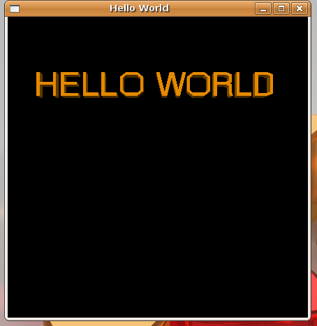
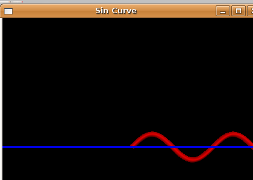
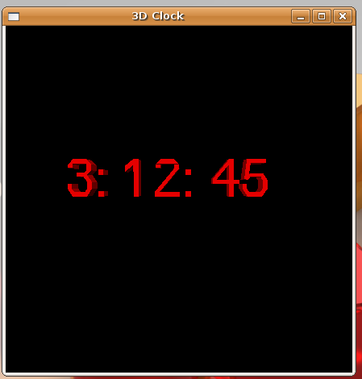
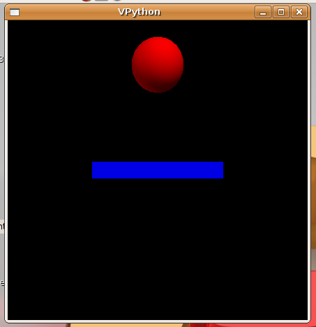
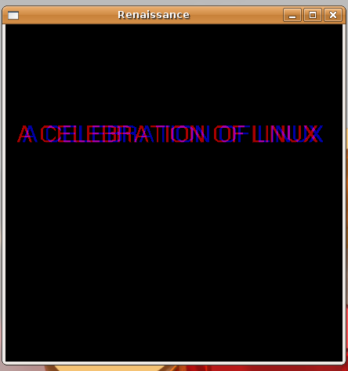

3D programming with Vpython
"3-Dimensional Programming for Ordinary Mortals"- claims the Vpython project website. Vpython is a python module for 3 Dimensional scientific programming, specifically useful for the people with a Physics background.
Based On A True Story
Almost 3 years back, the Department of Computer Applications , Government Engineering College, Thrissur, India decided to conduct their annual National Seminal Seminar and Programming Contest, known as Renaissance - 2005, in the month of November. The people for Linux (which includes me) convinced the Professors to make the Renaissance 2005 a celebration of Free/Open Source . Our decision was to make it a true celebration of Linux. Almost all the programs were on Linux based technologies.
We conducted regular meetings to ensure the quality of the program. In one such meetings, we faced a small but striking question from one of the participants: How are we going to manage the Introductory Multimedia Presentation? In our college, the "Intro Presentation" was the way to show off the artistic and technical talent of the hosting Department. Most of the other Departments were using "Flash"-based eyecandy presentations as their intro. But we have decided not to depend on "not so open" technologies, and roll one for our own. But we couldn't reach a conclusion on the alternative technology at that time.
Here Comes Vpython
Whenever we had a technical doubt, we always had a door to knock at. Out team has met our beloved guru "Mr. Pramode CE" at his home. On hearing our "little bit strange" requirement, we heard what we wanted to hear. "You people can try Vpython for this purpose. You may integrate the music with your application using gamepy if you want to utilize the multimedia capabilities of python.".
A 3D Hello World
The visual module can be downloaded from http://vpython.org. It depends on Numpy, gtkglarea and boost libraries. But for Debian or Ubuntu user,it is a simple one liner:
apt-get install python-visual
You install the gamepy module if you want to play music with your presentations. Of course, gamepy can do a lot more than simply playing music!. It can be installed by using apt.
apt-get install gamepy
Python is famous for it's simplicity and elegance. The vpython "hello world" program is as follows:
from visual.text import * # At present, VPython supports only numbers and uppercase characters. Other characters will be displayed as * # Specifying the Title of the window scene.title = "Hello World" # Here goes the hello world text text(pos=(0,3,0), string='HELLO WORLD', color=color.orange, depth=0.3, justify='center')
When you run his program as "python helloworld.py", your output will look like this

Now, let's try to 3D sine curve. You will be able to move this curve using your mouse.
from visual import * """ This will print the sin curve """ scene.title = "Sin Curve" scene.center = vector(0,0,0) # using a suitable 'box' as x- axis xaxis = box(length= 20, height=0.2, width= 0.5, color=color.blue) #creating the sine curve object sinecurve = curve( color = color.red, radius=0.2) dt = 0.1 for t in arange(0,10,dt): dydt = vector( t,sin(t), 0 ); sinecurve.append( pos=dydt, color=(1,0,0) ) rate( 500 )

If you want to try a 'real application' like clock, let's make a funny 3D clock.
from visual.text import *
import time
scene.title = "3D Clock"
while 1:
rate(100)
cur_time = time.localtime()
time_string = str(cur_time[3]) +": "+ str(cur_time[4]) + ": "+ str(cur_time[5])
timer = text(pos=(-3,0,-2), string=time_string, color= color.red, depth=0.5 )
time.sleep(1)
timer.makeinvisible()

Exploring some details of 3D vision
The stereo vision provides visual perception in 3D. Each human eye captures its own view, and the two separate images are sent on to the brain for processing. When the two images arrive simultaneously in the brain, they are united into a single picture. The resulting image is a three-dimensional stereo picture. This binocular disparity is interpreted by the brain as depth.
Vpython has the ability to generate real 3D objects. The redblue stereo vision can be enabled in vpython by setting scene.stero='redblue' in programs. We need the 'redblue' goggles to view the 3D extravaganza.
A Bit of Physics with Vpython
The main purpose of the visual module is to popularise the
visualizations in Physics. So let's analyse the secrets of gravitational
pull of our earth using the very famous equation Vt =
V0 + at, where Vt is the velocity at time
t, V0 is the initial velocity, and
a is the acceleration (in the case of a falling body,
acceleration is g, the acceleration due to gravity, i.e.,
9.8m/s2).
Also , V= d/t , ie velocity is the rate of change of displacement. Putting all these together:
from visual import *
#A floor is an instance of box object with attributes like length, height, width etc.
floor = box(length=4, height=0.5, width=4, color=color.blue)
# A ball is a spherical object with attributes like position,radius, color etc..
ball = sphere(pos=(0,4,0),radius=1, color=color.red)
#Ball moves in the y axis
ball.velocity = vector(0,-1,0)
# small change in time
dt = 0.01
while 1:
#setting the rate of animation speed
rate(100)
# Change the position of ball based on the velocity on the y axis
ball.pos = ball.pos + ball.velocity*dt
if ball.y < 1:
ball.velocity.y = -ball.velocity.y
else:
ball.velocity.y = ball.velocity.y - 9.8*dt

Replace acceleration due to gravity (here 9.8) with the acceleration due to gravity in the Mars, to see how the ball bounces in Mars. Later, we can modify the value to see how the ball will bounce in other planets. Finding the acceleration due to gravity for other planets is left as an exercise for the reader.
From Mars to the Past
Finally, the days of Renaissance arrived. The day before the day of inauguration, I paid a visit to the local toy market to buy the "raw material" for the redblue stereovision glass. I bought 25 red colored goggles and 25 blue colored goggles from the local toy shop. It cost me only around 2 Dollars. At the hostel, we created 50 redblue stereovision glasses by keeping the red glass in the right frame and blue glass in the left frame.
After the inauguration function, I conducted an interactive session on Vpython with the help of a projector. My friends distributed the "redblue stereovision goggles" to the audience. After the session, I showed the audience the Real 3D Multimedia Introduction of the Renaissance.
from visual.text import *
import time
#importing pygame to play the background music :)
#import pygame
#Uncomment it if you have the redblue goggles
scene.stereo='redblue'
scene.title = "Renaissance"
#scene.fullscreen = 1
scene.fov = 0.001
scene.range = 0
rate(100)
# Uncomment this if you need to play the background music
#pygame.mixer.init()
#intromusic=pygame.mixer.Sound("/usr/share/sounds/KDE_Startup.wav")
#pygame.mixer.Sound.play(intromusic)
def intro():
Title= text(pos=(0,3,0), string='MCA PROUDLY PRESENTS', color=color.red, depth=0.3, justify='center')
for i in range(20):
rate(10)
scene.range = i
Title.makeinvisible()
scene.range = 0
Header= text(pos=(0,3,0), string='RENAISSANCE 2005', color=color.yellow, depth=0.3, justify='center')
for i in range(20):
rate(10)
scene.fov = 3
scene.range = i
# Now play with colors
Header.reshape(color= color.cyan)
time.sleep(1)
Header.reshape(color= color.blue)
time.sleep(1)
Header.reshape(color= color.green)
time.sleep(1)
Header.reshape(color=color.orange)
time.sleep(1)
Header.reshape(color= color.red)
# Now let's delete the Header
Header.makeinvisible()
scene.range = 10
scene.fov = 0.2
Body= text(pos=(0,3,0), string='A CELEBRATION OF LINUX ', color=color.red, depth=0.3, justify='center')
Body.reshape(color=color.orange)
#Here I am not adding the rest of the code as it just shows the schedule of that days programs
# Invoking intro()
if __name__ == '__main__':
intro()

Conclusion
Renaissance 2005 became one of the most successful programs ever conducted in GEC. But the most important thing I have felt was we had real fun. Our team has succeeded in showing others how fun linux can be.
References
The stereoscopic vision details are explained in http://en.wikipedia.org/wiki/Stereopsis. The reference manual for Vpython can be found at http://www.vpython.org/webdoc/visual/index.html.
Talkback: Discuss this article with The Answer Gang
I am an ardent fan of GNU/Linux from India. I admire the power,
stability and flexibility offered by Linux. I must thank my guru, Mr.
Pramode C. E., for introducing me to the fascinating world of Linux.
I have completed my Masters in Computer Applications from Govt.
Engineering College, Thrissur (Kerala, India) and am presently working at
Ushus Technologies, Thiruvananthapuram, India, as a Software Engineer.
In my spare time, you can find me fiddling with Free Software, free
diving into the depths of Ashtamudi Lake, and practicing Yoga. My other
areas of interest include Python, device drivers, and embedded
systems.